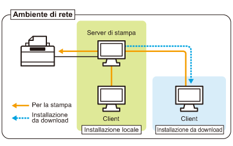

Se la stampante è utilizzata nell'ambiente del server di stampa è possibile stampare da altri computer (client) che non sono collegati direttamente alla stampante.
 |
Il computer collegato direttamente alla stampante è chiamato "server di stampa", mentre gli altri computer che utilizzano la stampante tramite il server di stampa sono chiamati "client".
|

Impostando il server di stampa inoltre sarà possibile gestire la stampante nei modi seguenti.
Dal server di stampa è possibile gestire i processi di stampa di tutti i client.
I client possono scaricare e installare il driver della stampante dal server di stampa (non è necessario utilizzare il CD-ROM).
Per utilizzare la stampante nell'ambiente del server di stampa eseguire una delle operazioni seguenti.
Se il proprio computer è il server di stampa
|
1.
|
Installare il driver della stampante.
|
||
|
2.
|
Configurare il server di stampa.
|
Se il proprio computer è un computer client
Installare il driver della stampante.
Esistono due metodi di installazione del driver della stampante sui computer client: installazione locale e installazione da download.
<Installazione locale>
È possibile installare il driver della stampante dal CD-ROM fornito a corredo.
<Installazione da download>
È possibile installare il driver della stampante senza utilizzare il CD-ROM fornito a corredo ma scaricando il driver dal server di stampa. Per scaricare e installare il driver della stampante sono disponibili le modalità seguenti.
|
NOTA
|
||
|
Precauzioni per lo scaricamento e l'installazione del driver della stampante
Se sul server di stampa c'è uno dei sistemi operativi a 64 bit seguenti, l'installazione da download di eventuali computer client con sistema operativo a 32 bit non è supportata a causa delle limitazioni di Windows.
Windows 2000
Windows XP (su cui è installato SP1 o nessun Service Pack)
Windows Server 2003 (su cui non è installato alcun Service Pack)
|